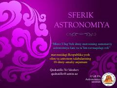

PDSferik astronomiya asoslari va burchak o'lchovlari tizimi haqida ilmiy qo'llanma.
Ushbu qo'llanma sferik astronomiya asoslari va astronomiyada burchak o'lchovlari tizimini tushuntiradi. Unda gradus, minut va sekund birliklarining o'zaro bog'liqligi hamda astronomik hisob-kitoblar uchun zarur bo'lgan o'lchov birliklari keltirilgan.